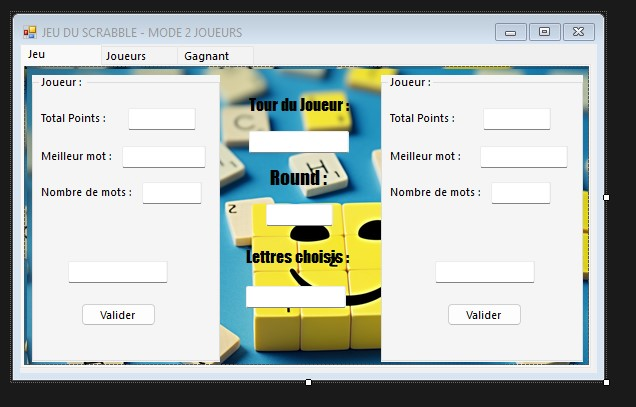
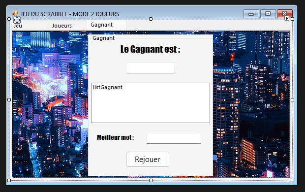
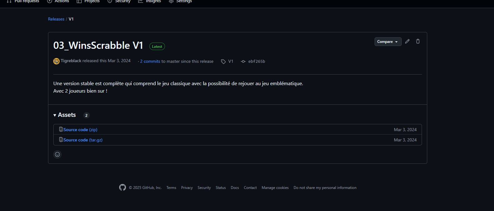

Le projet
WinScrabble est une application Windows qui reproduit fidèlement le célèbre jeu de Scrabble. Développée en C# avec Windows Forms sous Visual Studio, elle propose une expérience complète à 2 joueurs en local.
Le projet intègre une pioche aléatoire, un système de gestion des lettres, le calcul automatique des scores, ainsi qu'un dictionnaire intégré pour la validation des mots posés.
Langage
C# · .NET Framework
GUI
Windows Forms
IDE
Visual Studio
Versioning
GitHub · Release V1
Finalisé
Mars 2024
Contexte
BTS SIO · 1ÈRE ANNÉE
Aperçu

Interface de jeu — 2 joueurs
IN-APP

Écran du gagnant
IN-APP

Release GitHub — V1
GITHUB
Fonctionnalités
#01
Interface 2 joueurs
Scores en temps réel, alternance de tours, lettres choisies et rounds comptabilisés pour chaque joueur.
#02
Gestion des lettres
Pioche aléatoire, lettres limitées selon les règles officielles du Scrabble, possibilité de remplacement.
#03
Calcul automatique des scores
Attribution des points selon la valeur de chaque lettre et les cases spéciales du plateau de jeu.
#04
Validation par dictionnaire
Vérification des mots soumis via un dictionnaire intégré — les mots invalides sont automatiquement rejetés.